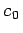
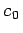

Inhalt Index DeskTop Bronstein

 Optimierung Lineare Optimierung Grundbegriffe der linearen Optimierung, Normalform Normalform der linearen Optimierungsaufgabe
Optimierung Lineare Optimierung Grundbegriffe der linearen Optimierung, Normalform Normalform der linearen Optimierungsaufgabe


Die lineare Optimierungsaufgabe kann immer, eventuell durch Umbenennung der Variablen, folgendermaßen umgeformt werden:
| (18.8b) |
Die letzten m Spalten der Koeffizientenmatrix sind offensichtlich linear unabhängig und bilden eine Basis. Die Basislösung kann sofort aus dem Gleichungssystem abgelesen werden. Ist , dann heißt (18.8a,b) eine Normalform oder kanonische Form des linearen Optimierungsproblems. In diesem Falle ist die Basislösung zulässig, d.h., sie ist , und somit eine Ecke von  . In der Normalform bezeichnet man die Variablen als Nichtbasisvariable und
. In der Normalform bezeichnet man die Variablen als Nichtbasisvariable und  als Basisvariable. Der zur Ecke gehörende Zielfunktionswert ist , da die in der Zielfunktion auftretenden x-Komponenten, die Nichtbasisvariablen, verschwinden.
als Basisvariable. Der zur Ecke gehörende Zielfunktionswert ist , da die in der Zielfunktion auftretenden x-Komponenten, die Nichtbasisvariablen, verschwinden.